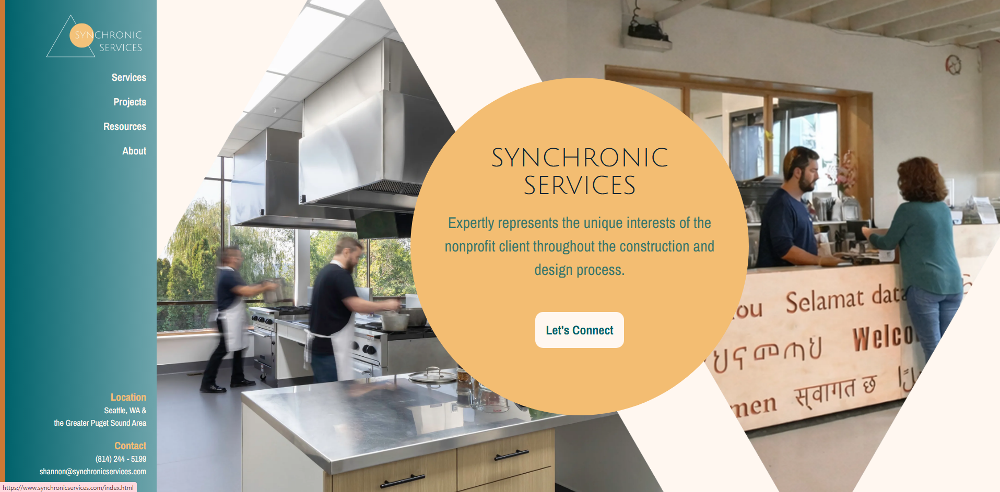
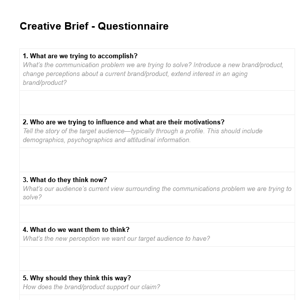
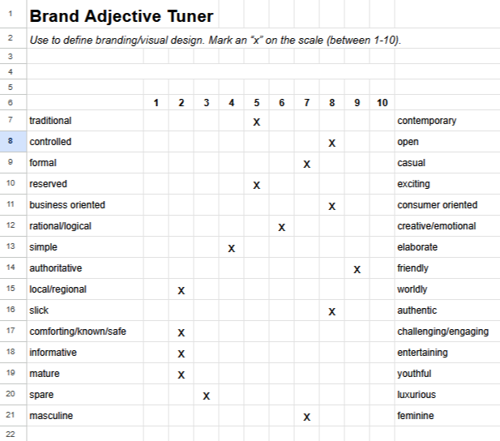
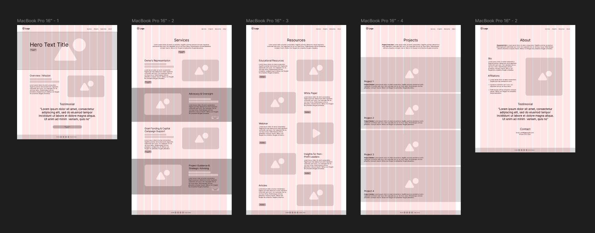
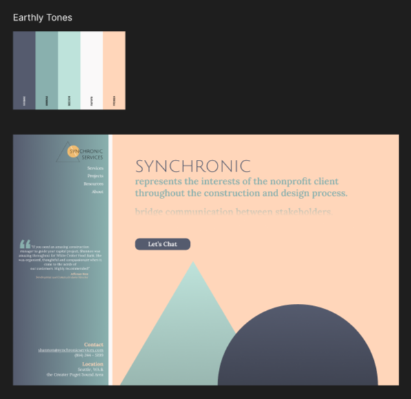
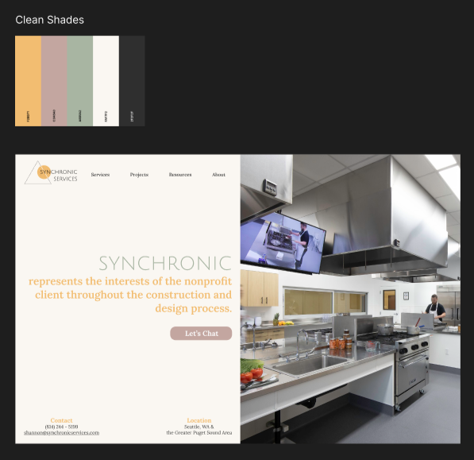
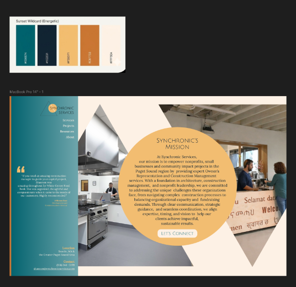
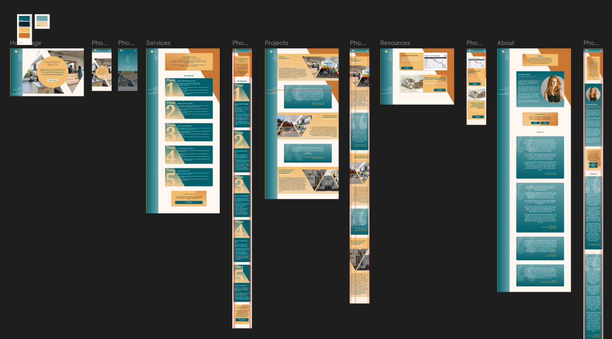
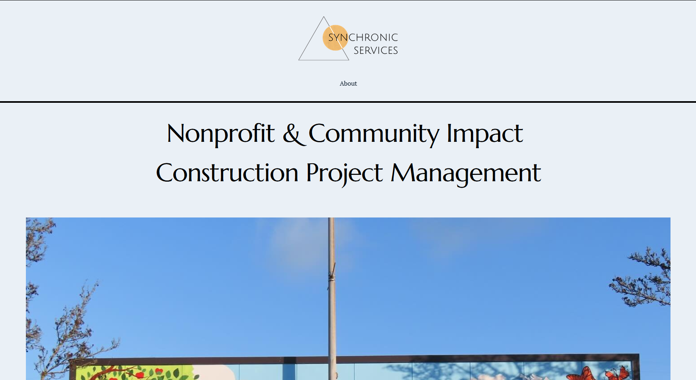

A complete redesign and development project focused on improving user experience, modernizing the brand, and increasing customer engagement.

Designer & Developer
6 Weeks
Figma, Photoshop, HTML, CSS, JavaScript, GSAP
Synchronic Services needed a modern website that clearly communicated their services and created a stronger first impression for potential customers.
Before designing anything, I gathered requirements through client surveys, interviews, and questionnaires.


Users needed to understand available services immediately.
The website needed stronger visual credibility.
Responsive design became a top priority.
I created low-fidelity wireframes to validate layout and content hierarchy before moving into visual design.

Multiple design directions were presented and reviewed with the client before selecting the final concept.

Concept A

Concept B

Final Direction
Once approved, the design was developed into a fully responsive website using HTML, CSS, Bootstrap, and JavaScript.

